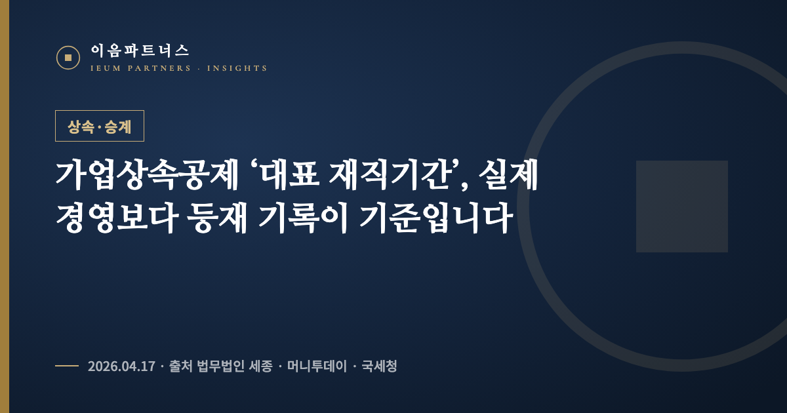

가업상속공제 ‘대표 재직기간’, 실제 경영보다 등재 기록이 기준입니다

배우자나 자녀와 함께 회사를 꾸려 오신 대표님이라면 실제로 경영해 온 사실은 당연히 인정될 거라고 생각하기 쉽습니다. 그런데 서울행정법원은 2026년 4월 17일, 가업상속공제 요건인 피상속인의 대표자 재직기간은 실제 경영에 참여한 기간이 아니라 사업자등록상 대표자로 등재돼 재직한 기간으로 따져야 한다고 판결했습니다(2025구합53845). 이 글에서는 판결의 뜻과 승계를 준비하는 대표님이 확인할 기록을 정리합니다.
가업상속공제는 요건 하나만 빠져도 공제를 받지 못할 수 있고, 빠진 요건은 나중에 바로잡기가 매우 어렵습니다. 그래서 상속이 일어나기 훨씬 전에 등기와 사업자등록 이력을 확인해 두는 것이 중요합니다. 우리 회사 승계 요건을 점검해 보고 싶으시면 카카오톡 채널 이음파트너스로 문의해 주세요.
대표 재직 요건은 무엇인가
가업상속공제는 부모가 10년 이상 계속 경영한 중소·중견기업을 자녀가 이어받을 때 최대 600억 원까지 상속재산에서 빼 주는 제도입니다(머니투데이). 피상속인(돌아가신 분)은 가업 기간 가운데 아래 세 가지 중 하나에 해당하는 기간 동안 대표이사(개인사업자는 대표자)로 재직해야 합니다(국세청 가업승계 지원제도 안내).
| 구분 | 내용 |
|---|---|
| 요건 ① | 가업 영위기간의 50% 이상 |
| 요건 ② | 10년 이상 (상속인이 대표직을 이어받아 상속개시일까지 계속 재직한 경우) |
| 요건 ③ | 상속개시일부터 거슬러 올라가 10년 중 5년 이상 |
| 공제 한도 | 가업 영위기간 10년 이상 300억 원, 20년 이상 400억 원, 30년 이상 600억 원 |
국세청은 대표이사 재직을 대표이사로 선임돼 법인등기부에 등재되고 그 직을 실제로 수행한 경우로 봅니다. 공동대표나 각자대표로 있었던 기간도 포함되고, 중간에 물러났다가 다시 취임했다면 재직기간을 합산해 따집니다(국세청).
이번 판결은 무엇을 말하나
법원은 가업상속공제가 세금을 깎아 주는 제도인 만큼 요건을 법 문언대로 엄격하게 해석해야 한다는 원칙을 다시 확인했습니다. 가족이 함께 사업을 하며 실질적으로 공동 경영을 했더라도 세법상 요건을 갖추려면 “사업자등록이나 등기부상에 대표자로서의 지위가 명확히 표시되어 있어야” 한다는 것입니다(법무법인 세종).
예를 들어 사업자등록에는 배우자만 대표자로 올라 있고 실제 경영은 다른 가족이 해 왔다면, 실제로 경영한 분의 재직기간은 인정받기 어려울 수 있습니다. 실제 경영 활동을 했다는 정황만으로는 부족하다는 것이 이번 판결의 요지입니다.
대표님이 지금 확인할 것
- 법인등기부와 사업자등록 이력을 떼어 대표님이 대표자로 등재된 기간을 연도별로 정리하세요.
- 공동대표나 각자대표로 있던 기간, 물러났다가 다시 취임한 기간도 빠짐없이 모아 두세요. 합산 대상입니다.
- 실제 경영자와 등재된 대표자가 다르다면, 위 세 가지 기간 요건을 채울 수 있도록 대표자 등재를 언제 어떻게 정리할지 세무사와 상의하시길 권합니다.
참고한 자료
- Tax Guide - Case Review (서울행정법원 2025구합53845 등) — 법무법인 세종 (2026.07.01)
- [TheTax]"일 그만할래, 아들아 회사 맡아라"...바로 손 떼도 가업상속공제 될까 — 머니투데이 (2026.06.13)
- 2024년 가업승계 지원제도 안내책자 — 국세청 (2024.04)
가업 승계 요건을 미리 점검하고 싶으시다면 카카오톡 채널 이음파트너스로 편하게 문의해 주세요.
※ 이 글은 일반적인 정보 제공을 위한 것으로, 개별 사안은 세무사·노무사 등 전문가와 함께 확인하시기 바랍니다.